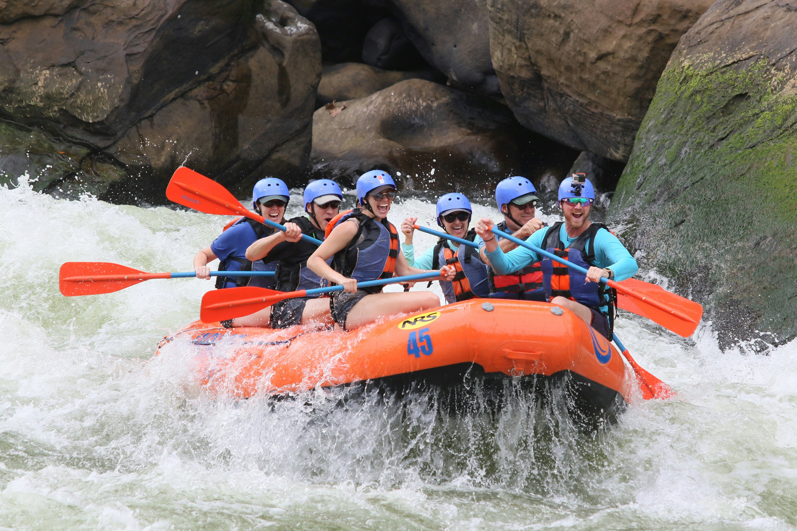

Our purpose is simple: to deliver thrilling, safe, and unforgettable river adventures. We believe that time on the water builds confidence, connection, and lifelong memories. Every trip is guided by trained professionals who put safety first and fun a very close second.
Founded on the banks of a wild mountain river by a small group of lifelong paddlers, White Water Rafting Co. began with a single raft and a lot of enthusiasm. What started as weekend trips for friends grew into a full guiding operation.

Over the years we have expanded our routes, trained dozens of guides, and welcomed thousands of guests. Through it all, our commitment to safety, respect for the river, and love of adventure has never changed.